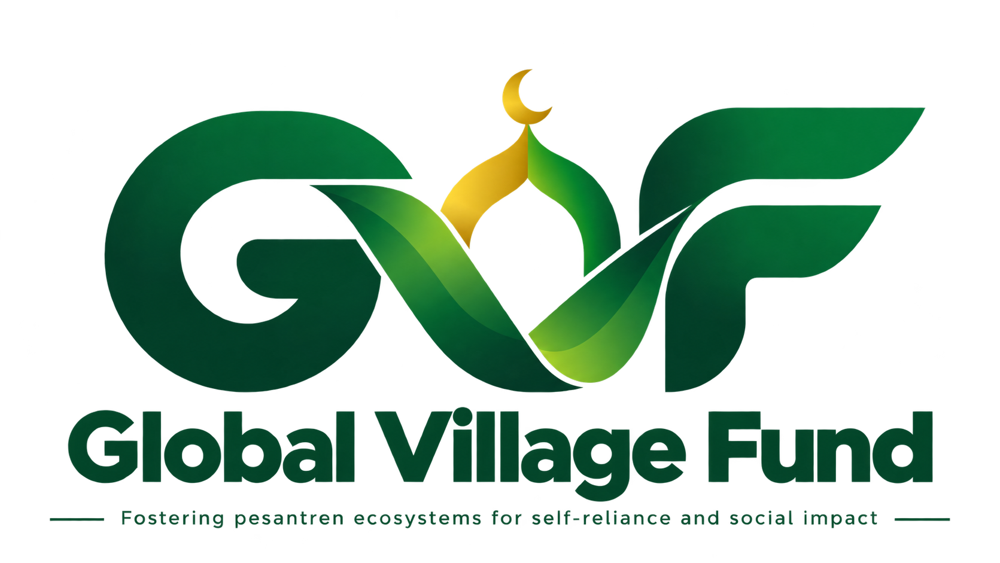

السَّلَامُ عَلَيْكُمْ وَرَحْمَةُ اللهِ وَبَرَكَاتُهُ
Donasi Pembangunan
Masjid Khairu Ummah Sugro
Mari bersama mewujudkan kawasan Garden Mosque Khairu Ummah Sugro, Pusat Pesantren Ecosystems for Self-Reliance and Social Impact • Pesantren Integratif Holistik SMK Skill Village Islamic School.
Global Village Fund
Merupakan wadah kontribusi kebaikan yang menghubungkan dukungan para donatur dengan berbagai program yang memberikan manfaat bagi masyarakat. Setiap kontribusi diarahkan untuk menjawab kebutuhan nyata dan menghadirkan kebermanfaatan yang berkelanjutan.
Masjid Khairu Ummah Sugro
Dalam program ini, Global Village Fund mendukung pembangunan Masjid Khairu Ummah Sugro di Pesantren Integratif Holistik SMK Skill Village Islamic School sebagai ruang ibadah, pendidikan, dan kebermanfaatan bagi santri serta masyarakat.
Simak lebih dekat semangat, visi, dan ikhtiar Global Village Fund melalui video berikut:
Transparansi Realisasi Anggaran Pembangunan
Pilihan Donasi
مَّثَلُ الَّذِينَ يُنفِقُونَ أَمْوَالَهُمْ فِي سَبِيلِ اللَّهِ كَمَثَلِ حَبَّةٍ أَنبَتَتْ سَبْعَ سَنَابِلَ فِي كُلِّ سُنبُلَةٍ مِّائَةُ حَبَّةٍ ۗ وَاللَّهُ يُضَاعِفُ لِمَن يَشَاءُ ۗ وَاللَّهُ وَاسِعٌ عَلِيمٌ
Terjemahan: "Perumpamaan orang-orang yang menginfakkan hartanya di jalan Allah adalah serupa dengan sebutir biji yang menumbuhkan tujuh tangkai, pada setiap tangkai ada seratus biji. Allah melipatgandakan (ganjaran) bagi siapa yang Dia kehendaki. Dan Allah Mahaluas (karunia-Nya) lagi Maha Mengetahui."
Alokasi Donasi
Mendukung kebutuhan konstruksi dan material untuk menyelesaikan pembangunan Masjid Khairu Ummah Sugro.
Mendukung pengadaan fasilitas dan perlengkapan untuk menunjang kegiatan ibadah, dakwah, dan pembelajaran di Masjid Khairu Ummah Sugro.
Infak: Kebutuhan Pembangunan
Infak yang disalurkan dapat mendukung pemenuhan berbagai kebutuhan konstruksi dan material untuk penyelesaian pembangunan Masjid Khairu Ummah Sugro, antara lain:
Sedekah: Fasilitas & Kegiatan Masjid
Sedekah yang disalurkan dapat mendukung pemenuhan berbagai kebutuhan fasilitas, perlengkapan, dan kegiatan di Masjid Khairu Ummah Sugro, antara lain:
Ingin Berdonasi dalam Bentuk Barang?
Setiap barang yang Anda salurkan menjadi bagian dari proses terwujudnya Masjid Khairu Ummah Sugro. Pilih kebutuhan yang ingin Anda dukung melalui infak dalam bentuk material pembangunan atau sedekah dalam bentuk fasilitas dan perlengkapan masjid.
Setiap material yang Anda salurkan menjadi bagian dari proses terwujudnya Masjid Khairu Ummah Sugro. Pilih kebutuhan yang ingin Anda dukung dan ikut berkontribusi melalui infak dalam bentuk barang.
Setiap fasilitas dan perlengkapan yang Anda salurkan turut mendukung kelengkapan dan pemanfaatan Masjid Khairu Ummah Sugro. Pilih kebutuhan yang ingin Anda dukung dan berkontribusilah melalui sedekah berupa barang.
Untuk menyalurkan donasi barang, silakan hubungi Customer Service melalui WhatsApp dengan menyampaikan jenis dan jumlah barang yang ingin didonasikan. Tim kami akan membantu proses konfirmasi dan memberikan informasi mengenai penyerahan donasi.
Modern Green Building & Santripreneur FAST
Kawasan dirancang mandiri energi, terintegrasi siklus lingkungan hidup, dan menjadi pusat pembinaan karakter santri yang Fathonah, Amanah, Siddiq, dan Tabligh.


.jpg)
Layanan Zakat & Wakaf
Global Village Fund juga menyediakan layanan Zakat dan Wakaf sebagai bagian dari ikhtiar menghadirkan kebermanfaatan yang lebih luas. Bagi donatur yang ingin menyalurkan Zakat atau wakaf untuk mendukung kebermanfaatan Masjid Khairu Ummah Sugro, prosesnya dapat dikonsultasikan secara manual melalui Customer Service.
Zakat Mal
Zakat Mal diperuntukkan bagi harta yang telah memenuhi ketentuan nishab dan haul zakat. Perhitungan dan konsultasi mengenai kewajiban zakat serta penyalurannya dilakukan secara terpercaya melalui Customer Service sesuai ketentuan syariat.
Wakaf Uang
Wakaf Uang diarahkan untuk mendukung pembangunan fisik dan penyediaan fasilitas jangka panjang Masjid Khairu Ummah Sugro, sebagai ikhtiar menghadirkan manfaat dan pahala jariyah yang berkelanjutan bagi santri serta umat.
G332+WWG, Jl. Raya Jonggol-Dayeuh Kp. Tegal Putat, RT.01/RW.06, Sukasirna, Kec. Jonggol, Kabupaten Bogor, Jawa Barat 16830